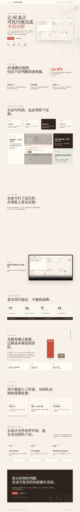
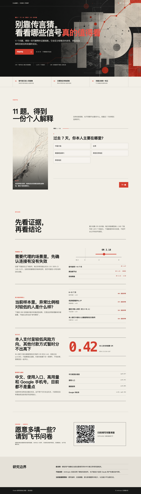
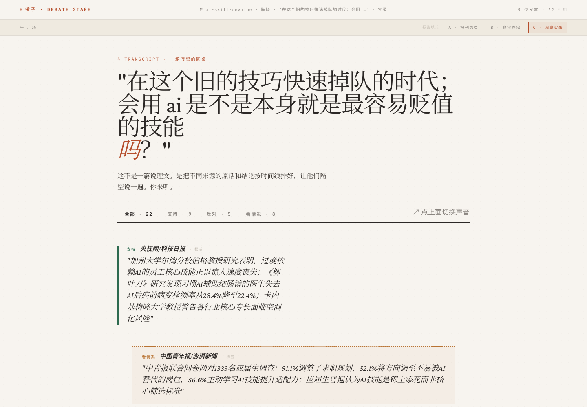

医学训练
全英临床医学经历与口腔医学背景，建立对真实场景、风险和人的敏感度。
WHO / WHY NOW
陈思翰，暨南大学 2025 级口腔医学专业；曾接受一年全英文临床医学培养。以 γδT 我主要做 γδT 细胞免疫衰老研究，也独立开发科研 Agent、Android App、研究服务与 AI 记忆产品。AdventureX 这个网站用于展示我的研究、产品和可交付的工作，也用来寻找科研产品合作。
点击方案即可选择。推荐方案 A，但会吸收方案 C 的数据交互；方案 B 仅作为更戏剧化的对照。
先解释为什么是你，再证明你已做成什么，最后让合作方知道如何与你共同推进。
全英临床医学经历与口腔医学背景，建立对真实场景、风险和人的敏感度。
围绕 γδT 细胞衰老与多组学研究，成为课题组核心生信分析节点。
我同时承担生信分析和产品开发，并把科研判断写进可复核的 Agent 系统。
TimeBox、镜子、社畜小猫展示记忆、工作流、工具调用和完整交付能力。
GoGoWork 团队创业、基地入围、竞赛、自媒体与社群运营证明传播和协作能力。
寻找科研 Agent 与单细胞平台合作：你提供产品与开发经验，对方提供算力与更大平台。
不靠装饰字体堆砌“设计感”：宋体讲故事，黑体做判断，等宽体承载证据，手写体只做个人旁注。
scrna-omics 使用点击播放的视频诊断台；TimeBox 使用米色新版；风险自测归入自媒体案例；镜子以 degree 报告为代表。





简历不复刻网站动效，但沿用米纸、墨黑、朱红和同一套信息层级。保证打印清晰、ATS 可读、现场扫码方便。
医学 × 生物信息学 × AI 产品
暨南大学 2025 级口腔医学专业，曾接受一年全英文临床医学培养。研究 γδT 细胞免疫衰老，并独立开发单细胞分析工具。
教育、论文、专利、生命科学竞赛、AI+创新大赛与校级创新创业项目在第一页形成可信背书。
独立产品、团队创业与内容传播
科研分析 ＞ 免疫学实验设计 ＞ 文献计量与知识库；全栈、Android、后端；工作流 ＞ 记忆系统 ＞ 工具调用与模型接入。
“本硕博三无”：口腔医学生｜AI 科研｜产品开发｜职业探索；两个近 500 人的小红书社群，近 5,000 收藏与点赞；同步在微信更新内容。